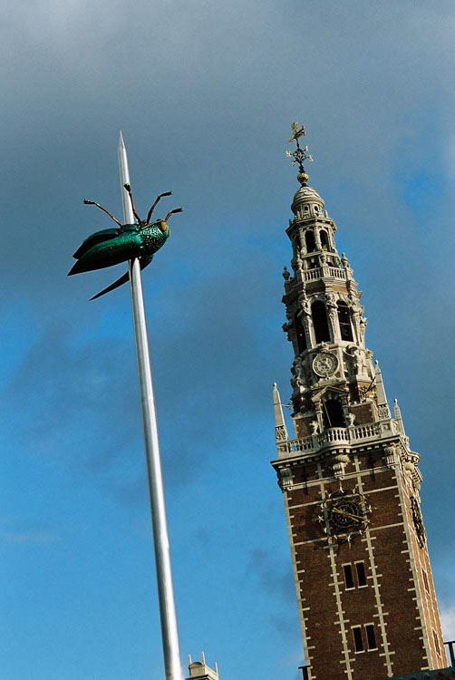

|
||||||||||||
|
||||||||||||
Venue
 Leuven is a small Belgian city situated on the important axis Oostende - Brussel - Leuven - Liège - Köln, in the heart of Western Europe. A walk from the railway station to the other side of town will only take you about 30 minutes. During such a walk you will notice Leuven is a very lively town proud of its rich heritage. You can find out more about the city of Leuven and its places of interest check on the webpages of 'Stad Leuven'.The University of Leuven has been a centre of learning for almost six centuries and is the oldest university in the Low Countries. The mission of K.U.Leuven is to provide high-quality interdisciplinary research and education. Conference Site
The Middleware 2008 conference will take place at the old college 'De Valk'
(link to google map),
an 18th century classist building in centre of Leuven. The Workshops,
Tutorials and the Doctoral symposium are held at the Salons Georges
(link to google map) at walking distance from 'De Valk'.
|
     |
|||||||||||